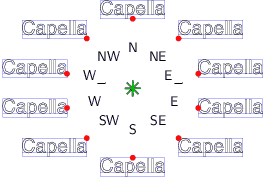

towards'In a text label, after the keyword towards, you can say in which
direction, seen from the celestial coordinates given after the at
keyword, the label should be printed. The following figure illustrates
the ten possible values after towards:

The red point marks the spot that lies exactly on the celestial
coordinates given after the `at' keyword.
The default value for towards is NE, so if you don't use
towards, PP3 places the text label to the upper right. In
particular, PP3 does not perform any algorithm for finding the
best position for the label as it does with automatically generated
labels.
For some nice tricks with text lables and towards, see LaTeX in labels.